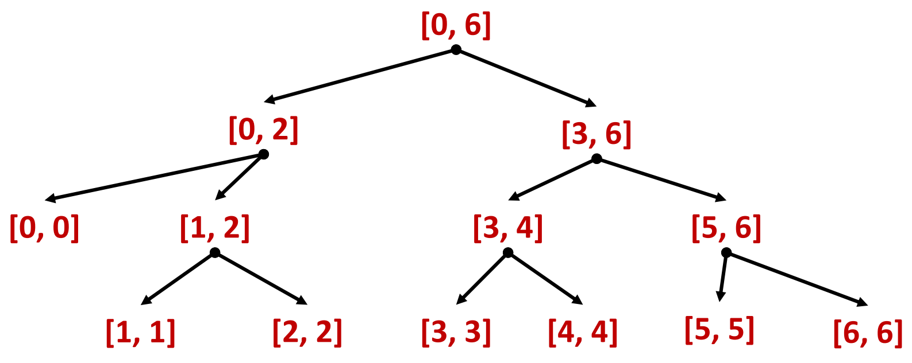

Структура алгоритмов, основанных на этом методе:
def sum(a):
sum = 0
for i in range(len(a)):
sum = sum + a[i]
return sum
$T_{sum}=O(n)$
def sum_r(a, l, r):
if l==r:
return a[l]
m = (r + l) / 2
return sum_r(a, l, m - 1) + sum_r(a, m, r)
def sum_list(a):
return sum_r(a, 0, len(a)-1)
Структура рекурсивных вызовов sum(0,6)
 $$4 + 5 + 1 + 9 + 13 + 11 + 7 =\\ = (4 + 5 + 1) + (9 + 13 + 11 + 7) =\\ = ((4) + (5 + 1)) + ((9 + 13) + (11 + 7)) = 50$$Рекуррентное соотношение – это обобщённое рекуррентное уравнение декомпозиции (general divide-and-conquer recurrence) $$T(n) = aT(n / b) + f(n),$$
Два $n$-битовых числа можно представить в виде $ax+b$, $cx+d$
Используя тождество $\color{green}{(a+b)(c+d)}=\color{red}{ac}+\color{darkorange}{(ad+bc)}+\color{blue}{bd}$, произведение можно представить в виде
$$(ax+b)(cx+d)=\color{red}{ac}x^2+\color{darkorange}{(ad+bc)}x+\color{blue}{bd}=\\ =\color{red}{ac}x^2+\color{darkorange}{\Big (}\color{green}{(a+b)(c+d)}-\color{red}{ac}-\color{blue}{bd}\color{darkorange}{\Big )}x+\color{blue}{bd} $$